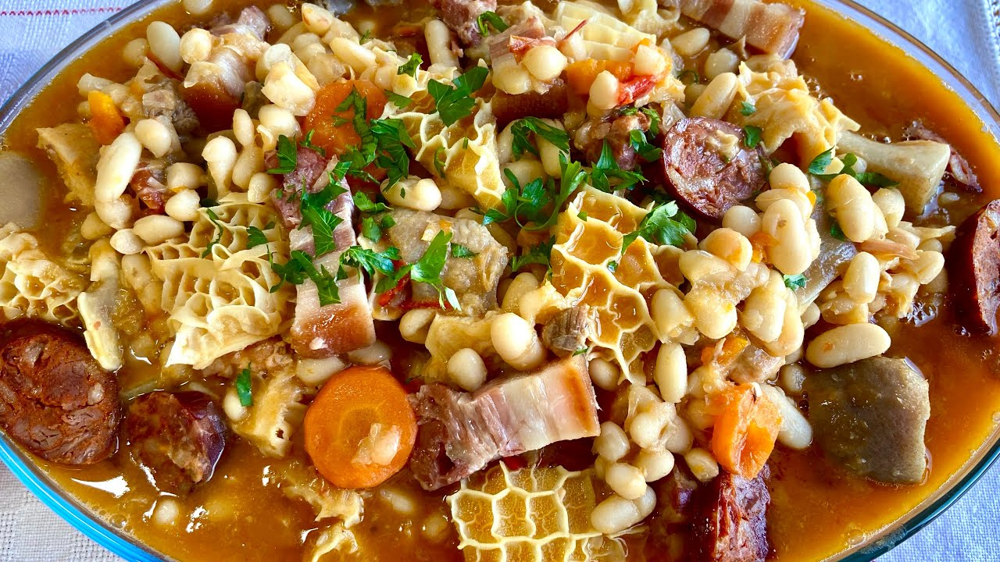

Tripas A Moda Do Porto

Description
Tripas à moda do Porto is a traditional dish originating in the city of Porto, and according to legend, it dates back to the period of the Portuguese Discoveries.
The dish is made with various types of meat, tripe, sausage, and white beans.
Ingredients
- 650 g white beans
- 1 ¼ kg tripe
- Salt
- Lemon
- 1 veal foot
- 4 Tablespoons olive oil
- 95 g bacon, diced
- 200 g beef, in 1-2 inch pieces
- ½ chicken, in serving pieces
- 1 large onion, diced
- 250 g chorizo, sliced
- 200 g ham, diced
- 1 ¼ teaspoons cumin
- 2 ½ teaspoons paprika
- 2 cloves garlic, minced
- 1 bay leaf
- 125 ml white wine
- 2 medium carrots, diced
- 1 morcilla sausage
- Black Pepper, to taste
- Salt, to taste
- Parsley, to taste
Steps to make it
- Pick over your beans for bad beans or foreign objects. Rinse, drain, and cover with several inches of cold water. Leave to soak over night.
- Thoroughly clean the tripe. Rub with lots of coarse salt and lemon juice, wash in several changes of cold water and finally in hot water. Place in a large pot with the veal foot, cover with cold water and bring to a boil. Boil for 5 minutes, skimming any scum from the water. Drain and rinse again with cold water. Boil again in plenty of salted water, reduce heat and simmer until tripe is tender, about 1 hour. Remove tripe and continue to simmer foot for 1-2 more hours. Cut the tripe into bite sized pieces and set aside.
- Meanwhile, drain the beans, cover with about an inch of fresh water and bring to a boil. Reduce heat and simmer for about 45 minutes, or until tender.
- Heat olive oil (or lard) and bacon in a heavy pot or dutch oven over medium heat. Cook until bacon has rendered, then use a slotted spoon to remove the bacon and set it aside. Working in batches if necessary, brown the beef and chicken in the fat. Set aside.
- Add the onion to the pot and sauté until it begins to brown. Add the chorizo and ham and sauté for a few more minutes. Add cumin, paprika, garlic and bay leaf, and stir for 30 seconds. Deglaze with white wine, then return the bacon, beef, chicken and the veal foot to the pot, along with the carrots. Add a little of the bean cooking liquid, cover the pot and simmer for about 5 minutes.
- Add the beans and tripe, along with enough tripe and foot cooking liquid to just cover. Simmer for another 30 minutes or so until everything is cooked. Add morcilla sausage for the last 10 minutes or so.
- Season with salt and pepper, cut morcilla into serving pieces, and serve over white rice. Garnish with parsley.
Go Back